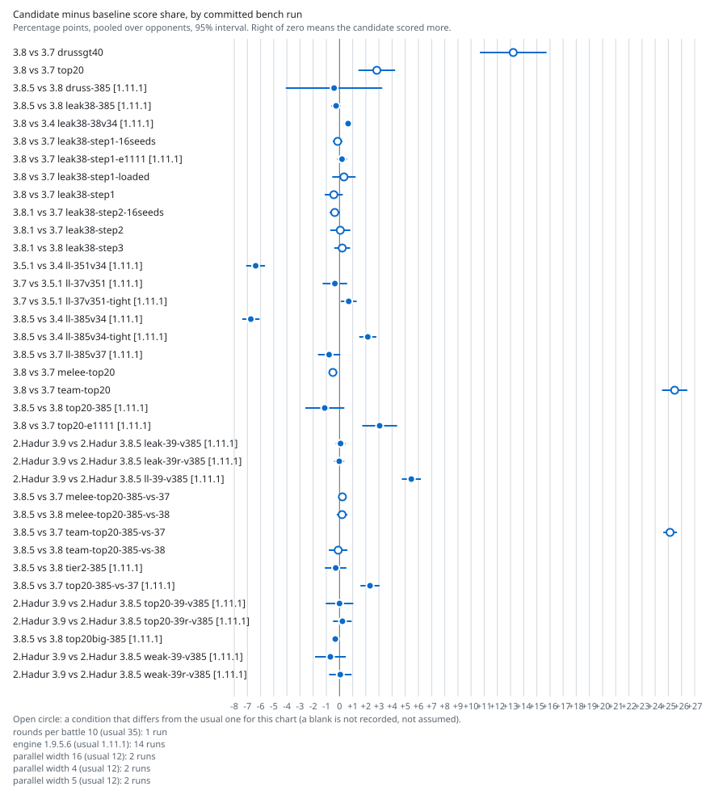

Bench analysis
One A3 page per harness run: the gate on top, then what the paired data shows, where the deficit sits and what is not measured. The figures are the candidate minus the baseline in score-share points with the opponent-clustered 95% interval; a run is called behind or ahead only when that interval excludes zero. The bench observes the robot and makes no evolution decision.
History
| Date | Run | Kind | Builds | Set | Gate | Result | Difference (points) |
|---|---|---|---|---|---|---|---|
| 2026-10-07 | top20big-385 | solo | 3.8.5 against 3.8 | top20.txt | CAUTION | level | -0.32 (-0.71 to +0.07) |
| 2026-10-06 | top20-e1111 | solo | 3.8 against 3.7 | top20-e1111 | NOT TRUSTED | not resolved, untrusted | +3.05 (-0.42 to +6.53) |
| 2026-10-06 | top20-385 | solo | 3.8.5 against 3.8 | top20-385 | NOT TRUSTED | not resolved, untrusted | -1.12 (-3.14 to +0.91) |
| 2026-10-06 | leak38-step3 | solo | 3.8 against 3.8.1 | leak38-step3 | CAUTION | level | -0.21 (-1.11 to +0.70) |
| 2026-10-06 | leak38-step2-16seeds | solo | 3.8.1 against 3.7 | leak38-step2-16seeds | CAUTION | level | -0.36 (-0.76 to +0.04) |
| 2026-10-06 | leak38-step2 | solo | 3.8.1 against 3.7 | leak38-step2 | CAUTION | level | +0.06 (-0.79 to +0.91) |
| 2026-10-06 | leak38-step1-loaded | solo | 3.8 against 3.7 | leak38-step1-loaded | NOT TRUSTED | not resolved, untrusted | +0.34 (-0.76 to +1.43) |
| 2026-10-06 | leak38-step1-e1111 | solo | 3.8 against 3.7 | leak38-step1-e1111 | CAUTION | level | +0.19 (-0.13 to +0.51) |
| 2026-10-06 | leak38-step1-16seeds | solo | 3.8 against 3.7 | leak38-step1-16seeds | CAUTION | level | -0.14 (-0.57 to +0.29) |
| 2026-10-06 | leak38-step1 | solo | 3.8 against 3.7 | leak38-step1 | CAUTION | not resolved | -0.43 (-1.15 to +0.29) |
| 2026-10-06 | leak38-385 | solo | 3.8.5 against 3.8 | leak38-385 | CAUTION | level | -0.26 (-0.59 to +0.06) |
| 2026-10-06 | druss-385 | solo | 3.8.5 against 3.8 | druss-385 | NOT TRUSTED | not resolved, untrusted | -0.41 |
| 2026-10-06 | 3.8_top20 | solo | hadur-3.8 against hadur-3.7 | 3.8_top20 | NOT TRUSTED | not resolved, untrusted | +2.84 (-1.01 to +6.68) |
| 2026-10-06 | 3.8_drussgt40 | solo | hadur-3.8 against hadur-3.7 | 3.8_drussgt40 | NOT TRUSTED | not resolved, untrusted | +13.21 |
Published by data/tools/publish_run.py; the registry is runs.json.
Trend
